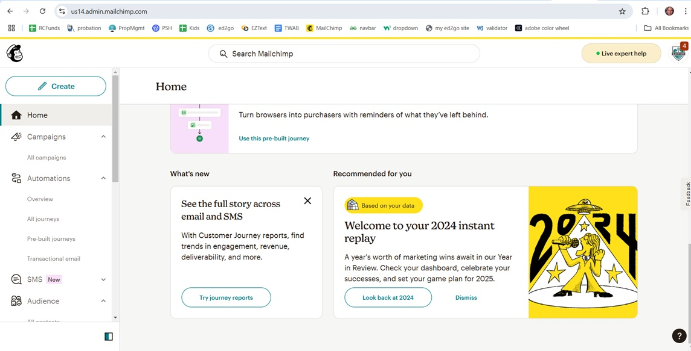
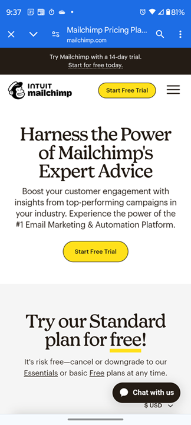
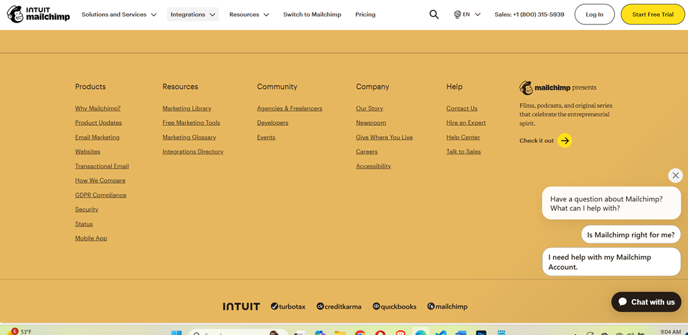
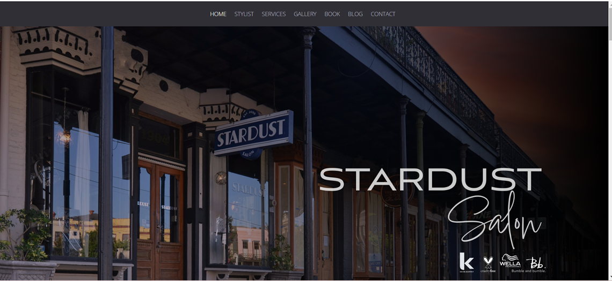

There are several key components that contribute to effective web design, such as navigation, whitespace, SEO, content, typography, and more. In this article, we will explore the use of color in two websites, and compare them. The first website is for Mailchimp, a popular email marketing tool, and the other is for Stardust Salon in New Orleans. Please allow me to take you on a journey in terms of how color can make quite an impact on the audience’s mood!
We will begin with Mailchimp. Here is a screenshot of its landing page, which is located at
www.mailchimp.com
Notice the use of bright, cheery yellow on its “Sign Up” buttons. This draws the audience’s eye to them, in an effort to drive a conversion. A conversion is just the goal of a website. It could be a sale, a sign-up for a newsletter, or a trial period for software. In this case it is the latter. Yellow and gray go nicely together, and I love the use of grays and neutrals in the blocks below.
Following is a screenshot of what you’ll see when you log in to Mailchimp:
Once again, yellow is used effectively. The yellow bar at the top sets the mood – cheery. The use of yellow below draws your eye. And of course, the use of whitespace is stellar. Next, let’s check out the Mailchimp landing page on a phone. Notice that “Start Free Trial” is in yellow, and to underline “free.” The overall effect is pleasant, and slightly irreverent, while the text emphasizes Mailchimp’s expertise.
Finally, let’s take a look at Mailchimp’s footer:
They've used a muted, harmonious shade of orange that complements the yellow nicely, and clearly delineates the footer from the rest of the page, while giving the site a pop of secondary color that looks fantastic!
Now we will visit the website of Stardust Salon in New Orleans. It can be found at www.stardustsalon.com 
I find the use of dark colors to be depressing and gloomy. I suspect they were going for sophisticated, but, in my opinion, it desperately needs a pop of color. Just adding some colored text to the navigation bar would do wonders for this website. As you explore the site, thankfully there is more white on some of the pages, but the overall effect is still gray and black. The site seems boring and somewhat amateurish.
I think it is clear that even a small amount of color can have a huge positive impact on a website. Don't be afraid to explore the use of color in your website! Thank you for reading!